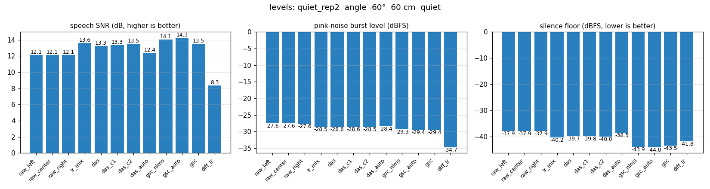
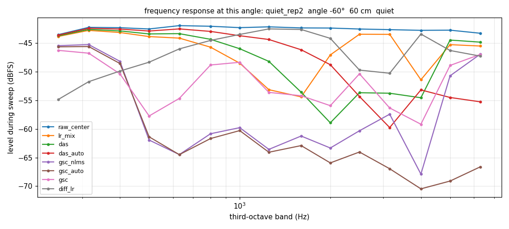
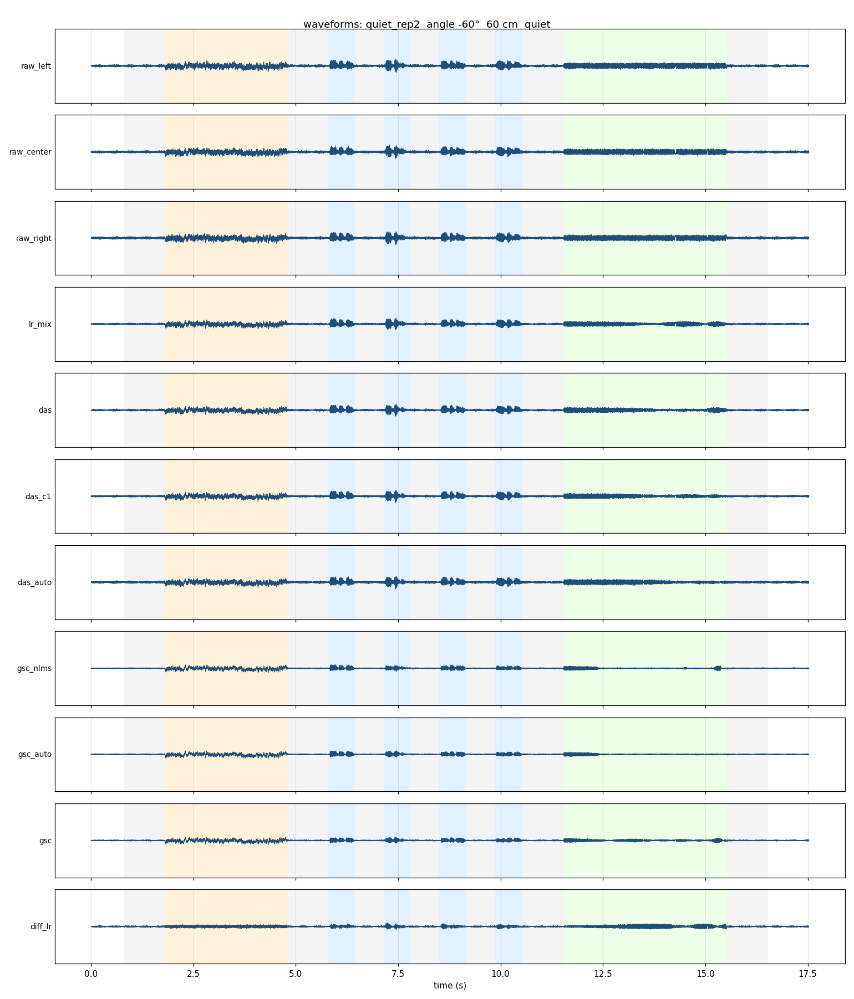
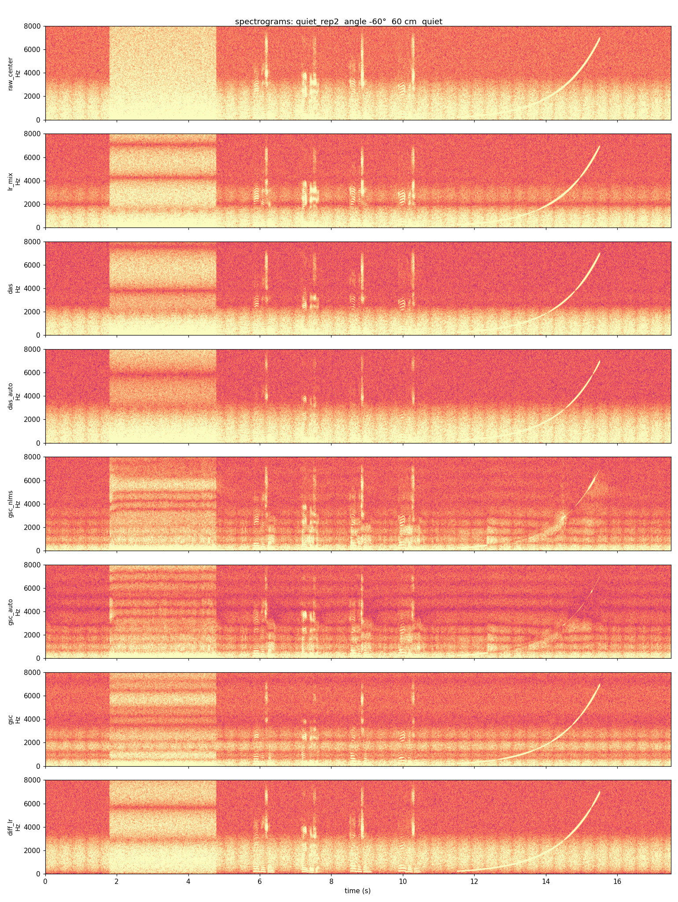

angle -60°, 60 cm, quiet, 17.53 s. Clip offset 0.8 s (confidence 0.928).
Microphones hear the source at -59° (L-R delay -5.62 samples, peak 10.8).
| path | rms_dbfs | speech_snr_db | noise_level_dbfs | silence_floor_dbfs | interf_rejection_db | interf_rejection_lf_db | snr_under_interference_db | speech_preservation | peak | clips |
|---|---|---|---|---|---|---|---|---|---|---|
| raw_left | -29.83 | 12.11 | -27.56 | -37.88 | 0.8971 | 6713 | 0 | |||
| raw_center | -29.83 | 12.1 | -27.56 | -37.88 | 0.9598 | 6762 | 0 | |||
| raw_right | -29.83 | 12.1 | -27.57 | -37.87 | 0.897 | 7202 | 0 | |||
| lr_mix | -31.4 | 13.63 | -28.49 | -40.25 | 0.988 | 6466 | 0 | |||
| das | -31.48 | 13.26 | -28.56 | -39.74 | 5978 | 0 | ||||
| das_c1 | -31.54 | 13.32 | -28.58 | -39.79 | 0.9931 | 6346 | 0 | |||
| das_c2 | -31.35 | 13.49 | -28.49 | -39.97 | 0.9815 | 6538 | 0 | |||
| das_auto | -31.1 | 12.37 | -28.36 | -38.51 | 0.9789 | 6101 | 0 | |||
| gsc_auto | -34.31 | 14.26 | -29.42 | -44.02 | 0.6254 | 4050 | 0 | |||
| diff_lr | -35.0 | 8.35 | -34.72 | -41.75 | 0.0005 | 3843 | 0 | |||
| gsc | -33.99 | 13.52 | -29.4 | -43.46 | 0.853 | 3865 | 0 | |||
| gsc_nlms | -34.11 | 14.05 | -29.34 | -43.94 | 0.5867 | 4057 | 0 |



